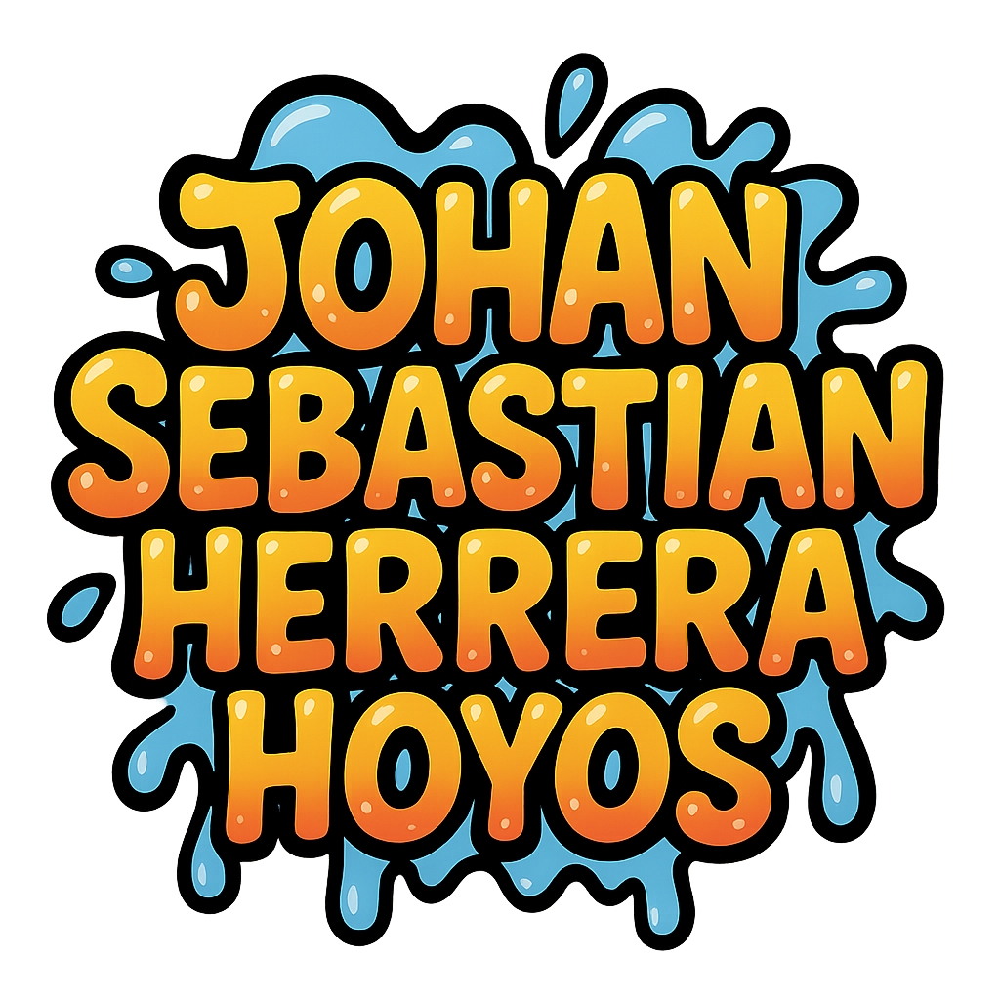
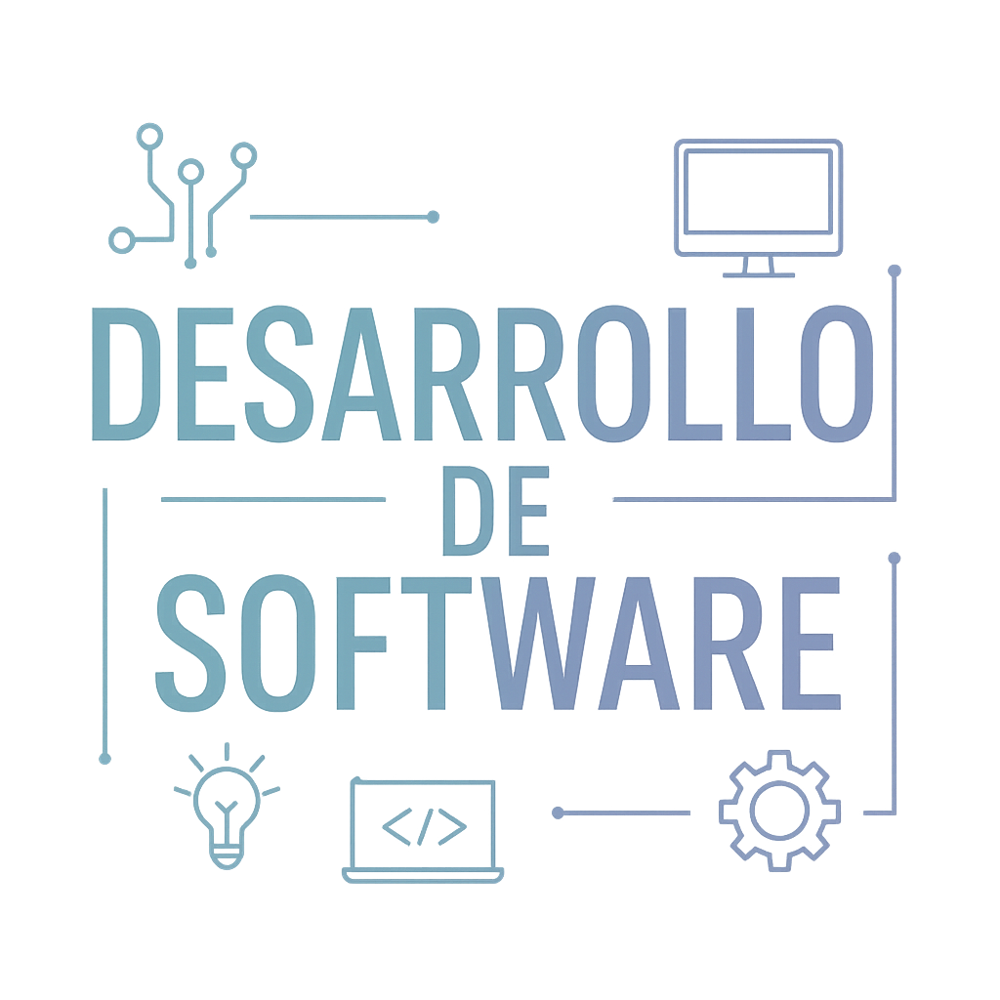

Experiencia laboral
Datos académicos
I.E.D Florida Blanca
Estudios Bachiller| 2011-2021
Sena
tecnico en sistemas | 2020-2021
Universidad de Sanbuenaventura
tecnologo en desarrollo de software | Actualidad
Conocimientos
Lenguajes de programación
 Python
Python  JavaScript
JavaScript .png) C++
C++ Bases de datos
 SQL
SQL Herramientas de desarrollo
 Visual Studio Code MySql
Visual Studio Code MySql Otros
 HTML
HTML Css
Habilidades
- buena adaptabilidad
- trabajo en equipo
- Resolución de problemas
Idiomas
-
Español
Ingles (A2)